História e identidade
Sociedade Esportiva Palmeiras
Fundado em 26 de agosto de 1914 como Palestra Italia, o clube atravessou mudanças políticas, viveu fases históricas como as Academias e consolidou uma nova era vitoriosa no século XXI.
tradição alviverde
O Palmeiras nasceu no bairro do Brás, em São Paulo, a partir da mobilização de imigrantes italianos que fundaram o Palestra Italia. Desde o início, o clube se ligou ao futebol, à vida associativa e a um forte sentimento de pertencimento entre seus torcedores. Essa origem ajuda a explicar por que a história palmeirense sempre mistura esporte, identidade e memória coletiva.
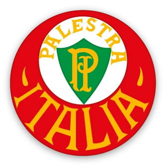
Escudo histórico do Palestra Italia.
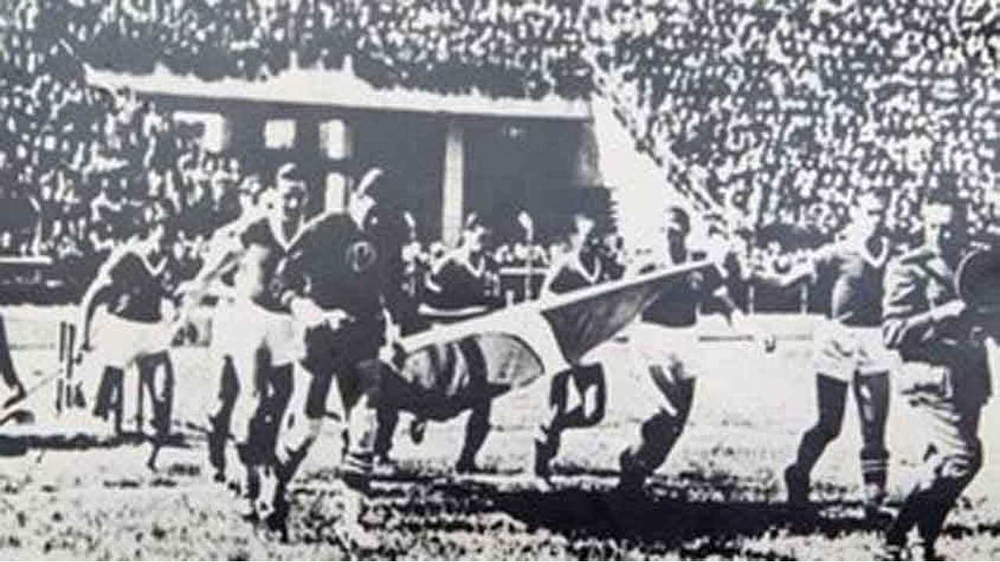
Em 1942, em meio ao contexto da Segunda Guerra Mundial, o clube deixou de se chamar Palestra Italia e passou a adotar o nome Sociedade Esportiva Palmeiras. A mudança não apagou a sua identidade: ela foi ressignificada no episódio conhecido como Arrancada Heroica, quando o time entrou em campo com a bandeira brasileira e conquistou o título paulista, reforçando uma imagem de resistência e orgulho.
Escudo associado ao período de afirmação do nome Palmeiras.
As décadas de 1960 e 1970 consolidaram as chamadas Academias, equipes lembradas pela qualidade técnica, organização e protagonismo nacional. Antes disso, o clube já havia conquistado a Copa Rio de 1951; mais tarde, a geração de 1999 levou o Palmeiras à sua primeira CONMEBOL Libertadores, ampliando o peso internacional da camisa alviverde.
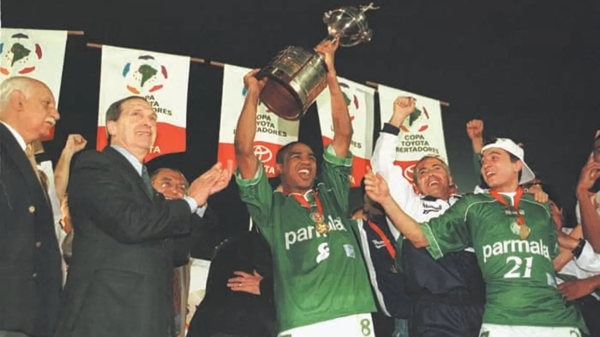
A primeira Libertadores, em 1999.
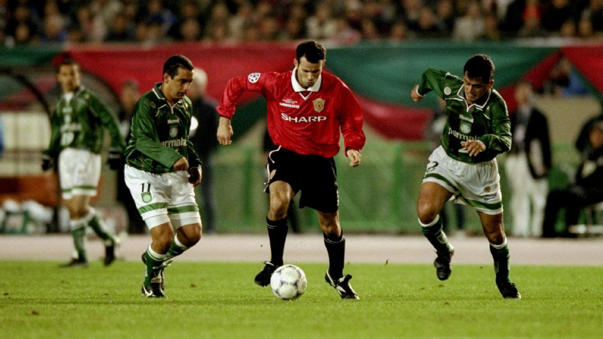
A frustração no Mundial de 1999.
Nem toda a trajetória foi de glórias. O clube passou por anos de instabilidade esportiva, rebaixamentos e longos períodos sem grandes títulos, cenário que marcou parte dos anos 2000 e início da década seguinte. Ainda assim, a relação entre time e torcida permaneceu intensa, inclusive nos momentos mais difíceis.
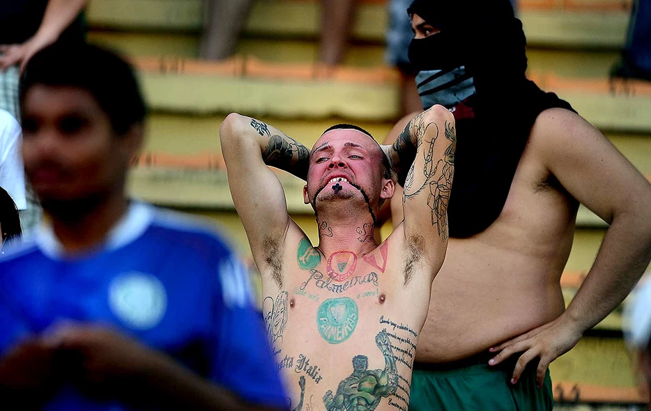
A memória alviverde também passa pelos anos de crise e reconstrução.
A recuperação ganhou força com a reorganização institucional e esportiva do clube, alcançando um novo patamar a partir da década de 2010 e, especialmente, na era Abel Ferreira. Libertadores em 2020 e 2021, além do Brasileirão de 2023, simbolizam um período de competitividade constante, identidade tática forte e protagonismo continental.
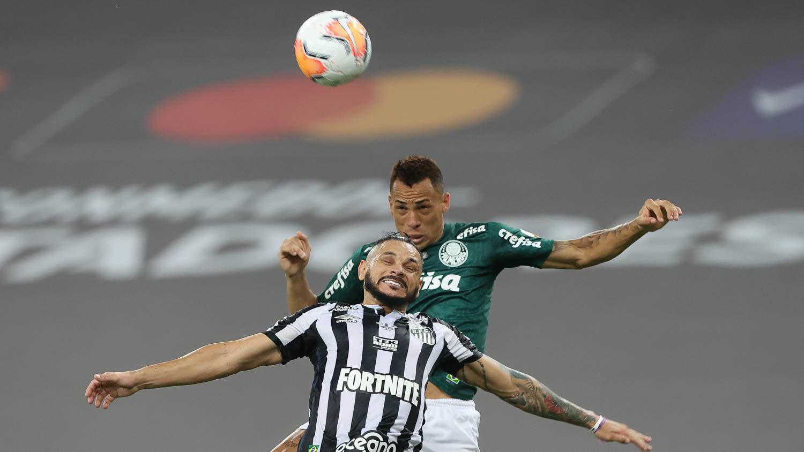
Libertadores 2020
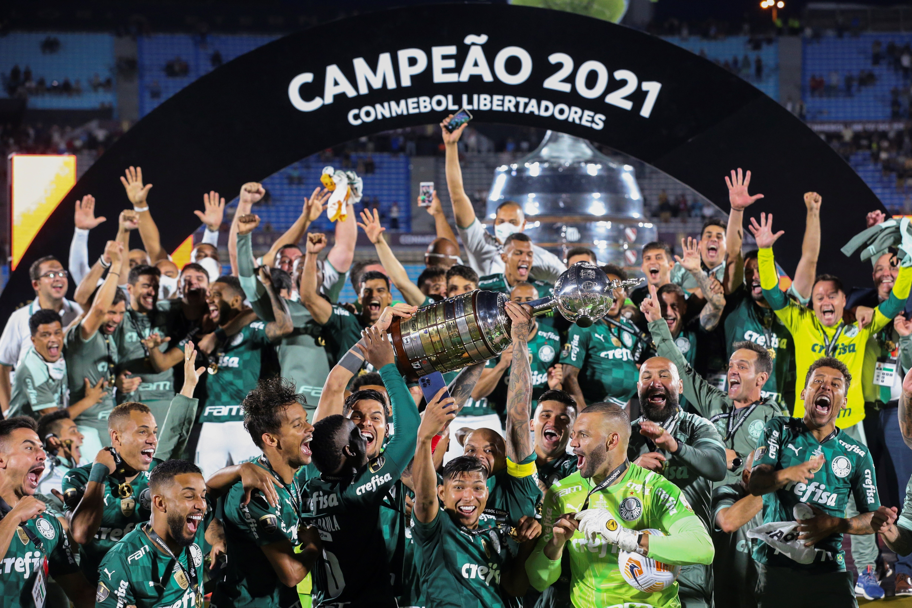
Libertadores 2021
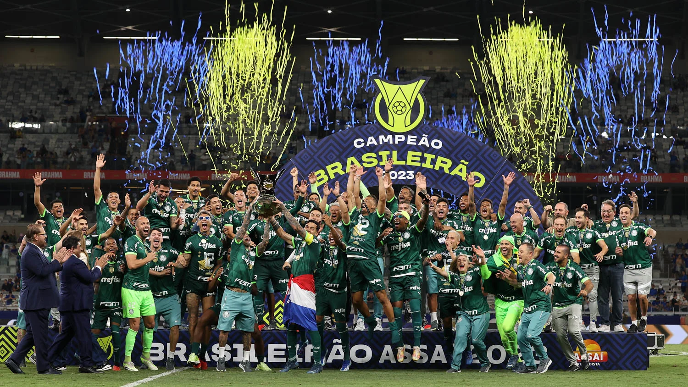
Brasileirão 2023
Escudo e símbolo
O brasão atual foi instituído em 1942. Segundo o clube, as oito estrelas na circunferência maior fazem referência a agosto, mês de fundação, enquanto as 26 linhas internas remetem ao dia 26. O “P” central preserva a continuidade com o período do Palestra Italia.

Elenco atual
Formação em campo
Esquema visual da distribuição tática da equipe levando em consideração as cinco últimas escalações do Campeonato Paulista 2026 e o Campeonato Brasileiro 2026.
Reservas
Técnico
Abel Ferreira
Mais vitorioso comandante da história do clube.Uniformes
Uniformes oficiais da temporada
Os três uniformes oficiais da temporada 2026.
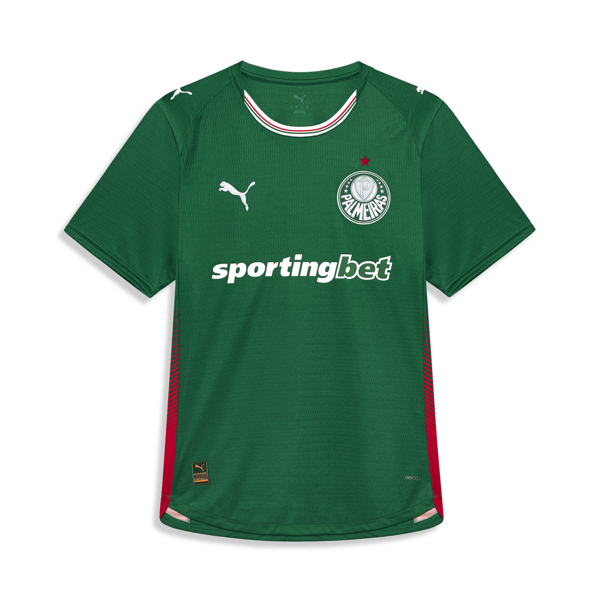
Primeiro uniforme
Apresenta o verde tradicional como cor predominante, mas inova nas laterais com faixas sublimadas em verde e vermelho. A gola apresenta o inédito formato em “U” híbrido: tecido verde na nuca e branco na frente, com listras finas em verde e vermelho, remetendo à bandeira da Itália.
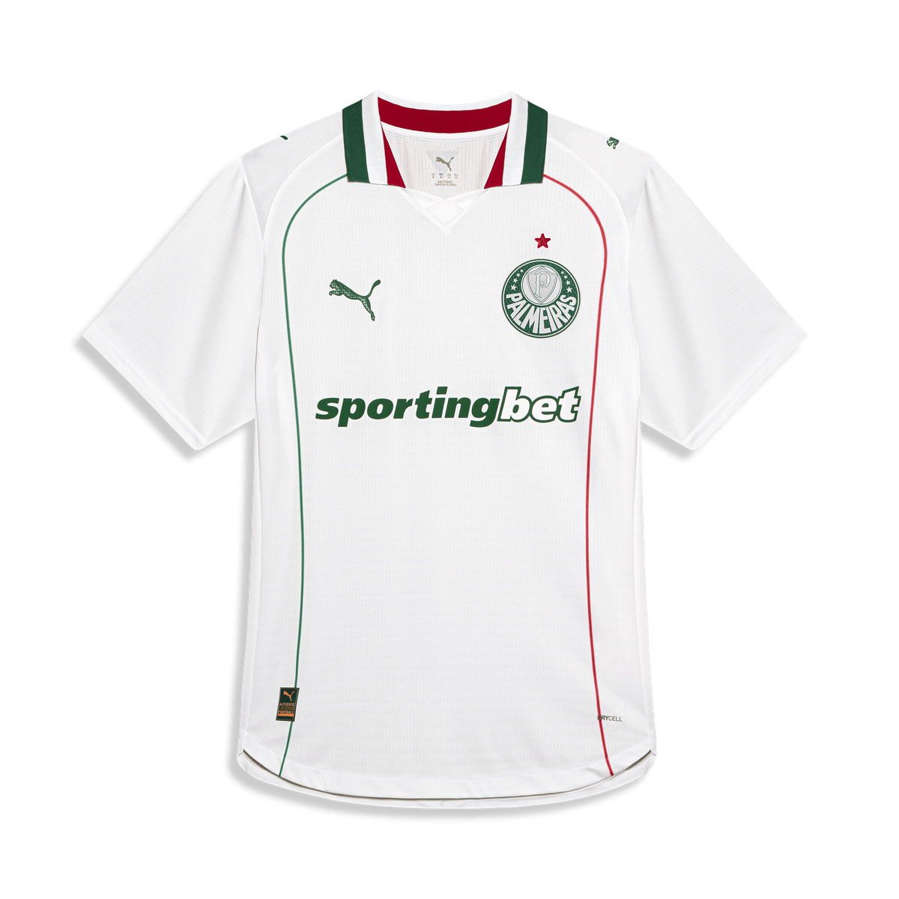
Segundo uniforme
Predominantemente branco, com gola polo retilínea nas três cores da bandeira da Itália (verde, branco e vermelho). O destaque frontal fica por conta de duas faixas verticais finas, uma verde e outra vermelha.
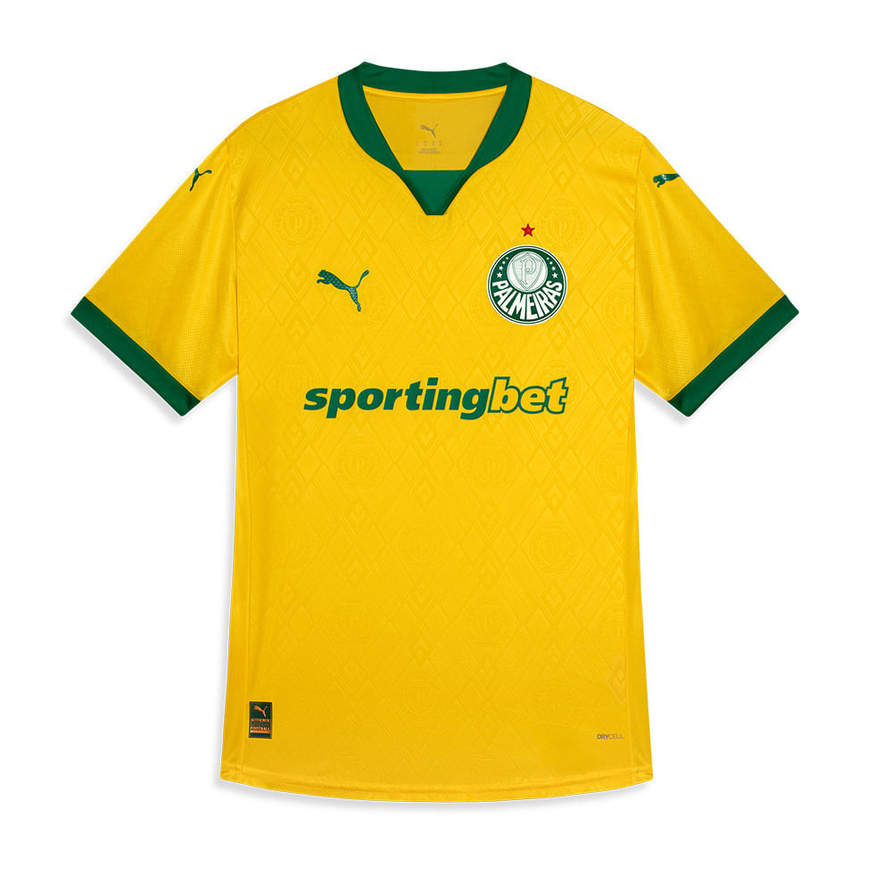
Terceiro uniforme
Se destaca pelo tom amarelo vibrante, com detalhes em verde tradicional. O uniforme completo é composto por short azul e meiões brancos com faixas verdes e amarelas, em alusão à força da torcida e à grandeza do clube. A combinação remete também ao uniforme usado pelo Palmeiras no histórico amistoso contra o Uruguai em 1965, quando o clube representou a Seleção Brasileira – da comissão técnica aos jogadores.
Conquistas
Títulos do Palmeiras
Tabela organizada por categoria.
Intercontinentais
| Competição | Títulos | Temporadas |
|---|---|---|
| Copa Rio Internacional | 1 | 1951 |
Continentais
| Competição | Títulos | Temporadas |
|---|---|---|
| Copa Libertadores da América | 3 | 1999, 2020 e 2021 |
| Copa Mercosul | 1 | 1998 |
| Recopa Sul-Americana | 1 | 2022 |
Nacionais
| Competição | Títulos | Temporadas |
|---|---|---|
| Campeonato Brasileiro | 12 | 1960, 1967(1), 1967(2), 1969, 1972, 1973, 1993, 1994, 2016, 2018, 2022 e 2023 |
| Copa do Brasil | 4 | 1998, 2012, 2015 e 2020 |
| Supercopa Rei | 1 | 2023 |
| Copa dos Campeões | 1 | 2000 |
| Campeonato Brasileiro - Série B | 2 | 2003 e 2013 |
Interestaduais
| Competição | Títulos | Temporadas |
|---|---|---|
| Torneio Rio-São Paulo | 5 | 1933, 1951, 1965, 1993 e 2000 |
Estaduais
| Competição | Títulos | Temporadas |
|---|---|---|
| Campeonato Paulista | 27 | 1920, 1926, 1927, 1932, 1933, 1934, 1936, 1940, 1942, 1944, 1947, 1950, 1959, 1963, 1966, 1972, 1974, 1976, 1993, 1994, 1996, 2008, 2020, 2022, 2023, 2024 e 2026 |
| Campeonato Paulista Extra | 2 | 1926 e 1938 |